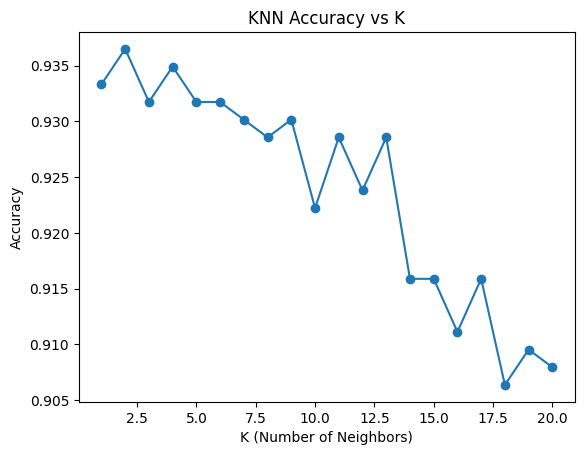

# Loading and Exploring Social Media and Telecom Dataset
## Explanation
This section connects to Google Drive and loads two datasets—Social Media and Telecom—into pandas DataFrames. It allows for an initial exploration by printing the first few rows of each dataset, providing insight into the structure and types of data available.
# Import necessary librariesimport pandas as pdfrom google.colab import drive# Mount Google Drivedrive.mount('/content/drive')# Defining file paths for both datasetssocialmedia_path ='/content/drive/MyDrive/socialmedia.csv'# Update if in a specific foldertelecom_path ='/content/drive/MyDrive/telecom.csv'# Update if in a specific folder# Load the social media datasetsocialmedia_df = pd.read_csv(socialmedia_path)print("Social Media Dataset:")print(socialmedia_df.head()) # Display the first few rows# Load the telecom datasettelecom_df = pd.read_csv(telecom_path)print("\nTelecom Dataset:")print(telecom_df.head()) # Display the first few rows
Mounted at /content/drive
Social Media Dataset:
Page total likes Type Category Post Month Post Weekday Post Hour \
0 139441 Photo 2 12 4 3
1 139441 Status 2 12 3 10
2 139441 Photo 3 12 3 3
3 139441 Photo 2 12 2 10
4 139441 Photo 2 12 2 3
Paid Lifetime Post Total Reach Lifetime Post Total Impressions \
0 0.0 2752 5091
1 0.0 10460 19057
2 0.0 2413 4373
3 1.0 50128 87991
4 0.0 7244 13594
Lifetime Engaged Users Lifetime Post Consumers \
0 178 109
1 1457 1361
2 177 113
3 2211 790
4 671 410
Lifetime Post Consumptions \
0 159
1 1674
2 154
3 1119
4 580
Lifetime Post Impressions by people who have liked your Page \
0 3078
1 11710
2 2812
3 61027
4 6228
Lifetime Post reach by people who like your Page \
0 1640
1 6112
2 1503
3 32048
4 3200
Lifetime People who have liked your Page and engaged with your post \
0 119
1 1108
2 132
3 1386
4 396
comment like share Total Interactions
0 4 79.0 17.0 100
1 5 130.0 29.0 164
2 0 66.0 14.0 80
3 58 1572.0 147.0 1777
4 19 325.0 49.0 393
Telecom Dataset:
Call Failure Complains Subscription Length Charge Amount \
0 8 0 38 0
1 0 0 39 0
2 10 0 37 0
3 10 0 38 0
4 3 0 38 0
Seconds of Use Frequency of use Frequency of SMS \
0 4370 71 5
1 318 5 7
2 2453 60 359
3 4198 66 1
4 2393 58 2
Distinct Called Numbers Age Group Tariff Plan Status Age \
0 17 3 1 1 30
1 4 2 1 2 25
2 24 3 1 1 30
3 35 1 1 1 15
4 33 1 1 1 15
Customer Value Churn
0 197.640 0
1 46.035 0
2 1536.520 0
3 240.020 0
4 145.805 0
New Section
# Social Media Data Cleaning of for Modelling
Explanation
This section focuses on the data cleaning necessary for preparing the Social Media Metrics dataset for machine learning. It includes selecting relevant input features and the target variable, handling missing values, and previewing the cleaned dataset. These steps are essential before applying any modelling techniques.
# Import necessary librariesimport pandas as pdfrom sklearn.model_selection import train_test_splitfrom sklearn.linear_model import LinearRegressionfrom sklearn.metrics import mean_squared_error, r2_scorefrom sklearn.preprocessing import StandardScaler, OneHotEncoderfrom sklearn.compose import ColumnTransformerfrom sklearn.pipeline import Pipeline# Load the Social Media Metrics datasetsocialmedia_df = pd.read_csv('/content/drive/MyDrive/socialmedia.csv')# Selecting relevant features and target variablefeatures = ['Page total likes', 'Type', 'Category', 'Post Hour', 'Paid']X_socialmedia = socialmedia_df[features]y_socialmedia = socialmedia_df['Lifetime Engaged Users']# Handling missing valuesX_socialmedia = X_socialmedia.fillna(0) # Replace with more appropriate imputation if needed# Display dataset structureprint("Features dataset:")print(X_socialmedia.head())print("\nTarget variable:")print(y_socialmedia.head())
Data Preprocessing and Pipeline Setup for Regression Modelling
Explanation
This section defines the preprocessing steps and creates a machine learning pipeline for predicting user engagement (Lifetime Engaged Users) using a linear regression model. It also prepares the data for training and testing by splitting it into subsets.
# Define the preprocessing stepspreprocessor = ColumnTransformer( transformers=[ ('num', StandardScaler(), ['Page total likes', 'Post Hour', 'Paid']), ('cat', OneHotEncoder(handle_unknown='ignore'), ['Type', 'Category']) ])# Define the pipelinepipeline = Pipeline(steps=[ ('preprocessor', preprocessor), ('regressor', LinearRegression())])# Split the data into training and testing sets (80-20 split)X_train_sm, X_test_sm, y_train_sm, y_test_sm = train_test_split(X_socialmedia, y_socialmedia, test_size=0.2, random_state=42)
Model Training, Prediction, and Evaluation
Explanation
This section completes the regression modeling process by training the pipeline, generating predictions, and evaluating performance on both training and test datasets. This helps assess how well the model generalizes to new, unseen data.
# Fit the model on training datapipeline.fit(X_train_sm, y_train_sm)# Make predictions on both training and testing datay_train_pred_sm = pipeline.predict(X_train_sm)y_test_pred_sm = pipeline.predict(X_test_sm)# Evaluate the modeltrain_mse_sm = mean_squared_error(y_train_sm, y_train_pred_sm)test_mse_sm = mean_squared_error(y_test_sm, y_test_pred_sm)train_r2_sm = r2_score(y_train_sm, y_train_pred_sm)test_r2_sm = r2_score(y_test_sm, y_test_pred_sm)print(f"Training MSE: {train_mse_sm}, Training R²: {train_r2_sm}")print(f"Testing MSE: {test_mse_sm}, Testing R²: {test_r2_sm}")
Training MSE: 851154.5821688741, Training R²: 0.20570089686390247
Testing MSE: 459291.161656748, Testing R²: 0.1558370513520827
Interpreting Model Coefficients to Identify Feature Importance
Explanation
This section extracts and displays the importance of each feature in the regression model by analyzing the coefficients assigned during training. It provides insight into which variables most significantly affect predicted user engagement.
# Get feature names after encodingfeature_names = preprocessor.named_transformers_['cat'].get_feature_names_out(['Type', 'Category'])all_feature_names = ['Page total likes', 'Post Hour', 'Paid'] +list(feature_names)# Model coefficientscoefficients = pipeline.named_steps['regressor'].coef_# Display feature importancefeature_importance = pd.DataFrame({'Feature': all_feature_names, 'Coefficient': coefficients})feature_importance = feature_importance.sort_values(by='Coefficient', key=abs, ascending=False)print("\nFeature Importance (sorted by absolute coefficient values):")print(feature_importance)
This section loads the Telecom Churn dataset and performs an initial data inspection to prepare for churn prediction. It identifies the target variable (Churn) and separates it from the feature set (X_telecom), setting the stage for future preprocessing and model building.
import pandas as pd# Load the churn dataset (make sure the path is correct)telecom_df = pd.read_csv('/content/drive/MyDrive/telecom.csv')# Check the first few rows of the dataset to confirm it loaded correctlyprint("Dataset Sample:")print(telecom_df.head())# Define the target variable 'Churn' and separate featuresX_telecom = telecom_df.drop(columns=['Churn'], errors='ignore')y_telecom = telecom_df['Churn']# Verify column names and structure of the dataprint("\nFeature Columns:")print(X_telecom.columns)print("\nTarget Variable Sample:")print(y_telecom.head())
Dataset Sample:
Call Failure Complains Subscription Length Charge Amount \
0 8 0 38 0
1 0 0 39 0
2 10 0 37 0
3 10 0 38 0
4 3 0 38 0
Seconds of Use Frequency of use Frequency of SMS \
0 4370 71 5
1 318 5 7
2 2453 60 359
3 4198 66 1
4 2393 58 2
Distinct Called Numbers Age Group Tariff Plan Status Age \
0 17 3 1 1 30
1 4 2 1 2 25
2 24 3 1 1 30
3 35 1 1 1 15
4 33 1 1 1 15
Customer Value Churn
0 197.640 0
1 46.035 0
2 1536.520 0
3 240.020 0
4 145.805 0
Feature Columns:
Index(['Call Failure', 'Complains', 'Subscription Length', 'Charge Amount',
'Seconds of Use', 'Frequency of use', 'Frequency of SMS',
'Distinct Called Numbers', 'Age Group', 'Tariff Plan', 'Status', 'Age',
'Customer Value'],
dtype='object')
Target Variable Sample:
0 0
1 0
2 0
3 0
4 0
Name: Churn, dtype: int64
Churn Prediction Using Logistic Regression and KNN with Model Comparison
Explanation
Data Preparation and Cleaning
The telecom dataset was loaded from Google Drive and inspected for missing values.
Missing data was handled by dropping rows with null entries to ensure the dataset was clean and complete before modeling.
Feature Selection and Separation
The target variable is ‘Churn’, indicating whether a customer left the service.
All remaining columns were treated as input features, further divided into:
Numerical features (e.g., age, usage metrics)
Categorical features (Age Group, Tariff Plan, Status)
Preprocessing Pipeline
To prepare the data for modeling:
Numerical features were standardized using StandardScaler to ensure all values are on a similar scale.
Categorical features were encoded using OneHotEncoder, converting categories into a machine-readable numeric format.
A ColumnTransformer combined these preprocessing steps, and each model was embedded in a pipeline to ensure consistent processing.
Model Training and Evaluation
The dataset was split into training (80%) and testing (20%) sets.
Two models were trained:
Logistic Regression: A linear classifier suitable for binary classification and interpreting feature importance.
K-Nearest Neighbors (KNN): A distance-based classifier that predicts labels based on the nearest data points in the feature space.
Each model was evaluated using accuracy score on the test set, providing an initial measure of predictive performance.
Hyperparameter Tuning for KNN
Since KNN’s performance depends heavily on the choice of K (number of neighbors), a loop tested values of K from 1 to 20.
The accuracy for each K was recorded and visualized using a line plot.
The optimal K was identified — the one that achieved the highest test accuracy.
Feature Importance Analysis (Logistic Regression)
Coefficients from the logistic regression model were extracted to assess the impact of each feature on churn.
Positive coefficients indicate features that increase the likelihood of churn.
Negative coefficients indicate features that decrease the likelihood.
This insight helps stakeholders understand which variables are most critical in predicting customer behavior.
import pandas as pdfrom sklearn.model_selection import train_test_splitfrom sklearn.preprocessing import StandardScaler, OneHotEncoderfrom sklearn.compose import ColumnTransformerfrom sklearn.pipeline import Pipelinefrom sklearn.linear_model import LogisticRegressionfrom sklearn.neighbors import KNeighborsClassifierfrom sklearn.metrics import accuracy_scoreimport matplotlib.pyplot as plt# Load the datasettelecom_path ='/content/drive/MyDrive/telecom.csv'# Update if in a specific foldertelecom_df = pd.read_csv(telecom_path)# Check for missing valuesprint("Missing Values:", telecom_df.isnull().sum())# Handle missing values (for simplicity, we'll drop rows with missing values)telecom_df = telecom_df.dropna()# Define feature columns and target variableX_telecom = telecom_df.drop('Churn', axis=1) # Featuresy_telecom = telecom_df['Churn'] # Target# Separate categorical and numerical featurescategorical_features = ['Age Group', 'Tariff Plan', 'Status'] # Example of categorical featuresnumerical_features = X_telecom.select_dtypes(include=['int64', 'float64']).columns.tolist()# Preprocessing pipeline for numerical and categorical featurespreprocessor = ColumnTransformer( transformers=[ ('num', StandardScaler(), numerical_features), # Scale numerical features ('cat', OneHotEncoder(handle_unknown='ignore'), categorical_features) # Encode categorical features ])# Create a pipeline for Logistic Regression and KNN modelslogreg_pipeline = Pipeline(steps=[ ('preprocessor', preprocessor), ('classifier', LogisticRegression())])knn_pipeline = Pipeline(steps=[ ('preprocessor', preprocessor), ('classifier', KNeighborsClassifier())])# Split data into training and testing sets (80-20 split)X_train, X_test, y_train, y_test = train_test_split(X_telecom, y_telecom, test_size=0.2, random_state=42)# Train Logistic Regression modellogreg_pipeline.fit(X_train, y_train)# Train KNN model (with K=5)knn_pipeline.fit(X_train, y_train)# Predictionslogreg_preds = logreg_pipeline.predict(X_test)knn_preds = knn_pipeline.predict(X_test)# Evaluate models using accuracylogreg_accuracy = accuracy_score(y_test, logreg_preds)knn_accuracy = accuracy_score(y_test, knn_preds)print(f"Logistic Regression Accuracy: {logreg_accuracy}")print(f"KNN Accuracy (K=5): {knn_accuracy}")# Explore effect of changing K in KNNk_values =range(1, 21) # Test K values from 1 to 20knn_accuracies = []for k in k_values: knn_pipeline.set_params(classifier=KNeighborsClassifier(n_neighbors=k)) knn_pipeline.fit(X_train, y_train) knn_preds = knn_pipeline.predict(X_test) knn_accuracies.append(accuracy_score(y_test, knn_preds))# Plot accuracy vs Kplt.plot(k_values, knn_accuracies, marker='o')plt.title('KNN Accuracy vs K')plt.xlabel('K (Number of Neighbors)')plt.ylabel('Accuracy')plt.show()# Best Kbest_k = k_values[knn_accuracies.index(max(knn_accuracies))]print(f"Best K for KNN: {best_k}")# Analysis: Most important features based on model coefficients (Logistic Regression)logreg_coef = logreg_pipeline.named_steps['classifier'].coef_[0]feature_names = numerical_features +list(preprocessor.transformers_[1][1].get_feature_names_out(categorical_features))feature_importance = pd.DataFrame({'Feature': feature_names, 'Coefficient': logreg_coef})print(feature_importance.sort_values(by='Coefficient', ascending=False))
Missing Values: Call Failure 0
Complains 0
Subscription Length 0
Charge Amount 0
Seconds of Use 0
Frequency of use 0
Frequency of SMS 0
Distinct Called Numbers 0
Age Group 0
Tariff Plan 0
Status 0
Age 0
Customer Value 0
Churn 0
dtype: int64
Logistic Regression Accuracy: 0.8698412698412699
KNN Accuracy (K=5): 0.9317460317460318

Best K for KNN: 2
Feature Coefficient
1 Complains 1.103923
0 Call Failure 0.868096
4 Seconds of Use 0.865874
14 Age Group_2 0.695437
16 Age Group_4 0.675648
15 Age Group_3 0.533240
10 Status 0.351586
12 Customer Value 0.192794
8 Age Group 0.149933
21 Status_2 0.148200
9 Tariff Plan 0.137933
19 Tariff Plan_2 0.036391
18 Tariff Plan_1 -0.046620
11 Age -0.154419
20 Status_1 -0.158429
2 Subscription Length -0.175953
7 Distinct Called Numbers -0.365365
3 Charge Amount -0.629595
17 Age Group_5 -0.918529
13 Age Group_1 -0.996025
6 Frequency of SMS -1.728051
5 Frequency of use -2.192656
Churn Prediction Results and Analysis
Model Performance Summary
After preprocessing and training both models on the telecom dataset, the following results were observed:
Logistic Regression Accuracy: 86.98%
K-Nearest Neighbors (K=5) Accuracy: 93.17%
Optimal K for KNN: 2 yielded the highest accuracy among the tested values (1–20).
These results indicate that KNN outperformed Logistic Regression in terms of predictive accuracy, making it the stronger model for identifying churn risk in this dataset.